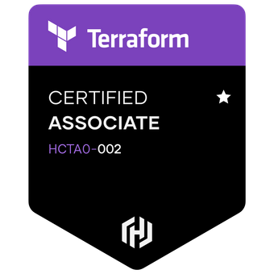

Summary
This website is created with DevOps practices
Experienced network engineer with a strong background in networking technologies and a passion for automation and Devops.
Experience
Network Engineer
Vicinity Centers (July 2021 - Current)
KPMG Australia (Nov 2019 - July 2021)
Cube Networks (Aug 2016 - Nov 2019)
- Implement automated network solutions, leverage DevOps methodologies to collaborate with the team member
- Providing network support including VPN, Load balancers, Wireless, Firewall, Routers, Switches, CASB.
- Designing, implement and providing as-built document for network component in projects.
- Maintained high network uptime and performance through proactive monitoring and maintenance of network devices
- Being part of an on-call rotation to operate an after-hour support service.
Certification
Education
Master of information Technology
Swinburne University of Technology
Skills
- Python
- Cloud (AWS/Azure)